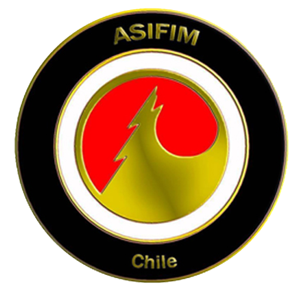
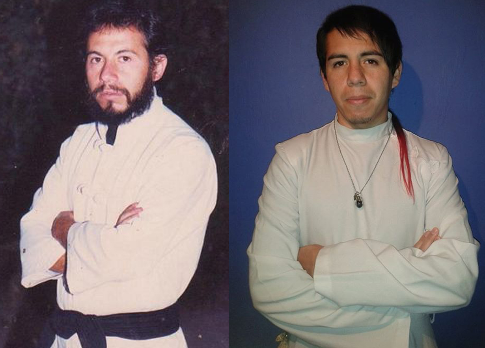

¿QUÉ ES ASIFIM?
Definición y Marco General

ASIFIM es una esfera integral de conocimientos, disciplinas, herramientas y espacios orientados a la autoexploración y la transmutación personal.
Su propósito es favorecer el desarrollo de la soberanía individual, la ampliación de la conciencia y la integración de la experiencia humana en todas sus dimensiones:
corporal, sensorial, psíquica, emocional, energética, creativa, simbólica, económica y social.
ASIFIM no constituye una escuela tradicional, una empresa de desarrollo personal, una terapia, una religión ni un sistema de creencias cerrado. Se configura como un compendio de saberes y prácticas articuladas en una metodología común denominada “Método ASIFIM”, puesta a disposición de personas que, de manera voluntaria, deciden participar en sus contenidos, actividades, servicios, cursos y espacios.
El sistema presenta diversas ideas, enfoques, prácticas, hábitos y estructuras simbólicas —incluyendo referencias a tradiciones, modelos y posibles jerarquías conceptuales— sin establecer imposiciones. Cada usuario mantiene plena autonomía para discernir, seleccionar, interpretar e integrar aquellos elementos que considere pertinentes, de acuerdo con sus propios intereses, procesos y criterios personales.
ASIFIM opera como un sistema metodológico abierto que ofrece marcos de observación, herramientas prácticas y experiencias de entrenamiento. Su orientación central es el desarrollo del discernimiento, la autorresponsabilidad consciente y el ejercicio libre y responsable de la propia autonomía.
La metodología articula saberes tradicionales, prácticas disciplinarias de origen diverso y exploraciones contemporáneas, generando un campo amplio de experiencias, análisis y herramientas —tanto prácticas como simbólicas— que facilitan la definición, desarrollo y revisión de objetivos y propósitos personales. Este proceso puede incluir distintas formas de orientación —práctica, racional, intuitiva o simbólica— según lo determine cada usuario.
La autodisciplina constituye un eje fundamental del Método ASIFIM, entendida como la capacidad consciente de sostener decisiones, prácticas y procesos propios con responsabilidad y criterio, sin dependencia externa.
En su dimensión pedagógica, ASIFIM integra procesos de aprendizaje basados en la experiencia directa, la percepción sensorial consciente y la exposición controlada a estímulos físicos, emocionales y simbólicos, incorporando el gesto, el rito, la performance y la vivencia como herramientas de comprensión. Estas prácticas —que pueden involucrar el cuerpo, la percepción, la energía, el deseo, la voluntad y los límites personales— se desarrollan bajo principios de consentimiento, autocuidado y responsabilidad individual.
ASIFIM reconoce la individualidad como un valor fundamental. No busca homogeneizar, corregir ni normalizar, sino acompañar procesos en los que cada persona desarrolla su propio camino de integración, en relación consciente con otros, sin dependencia ni sometimiento.